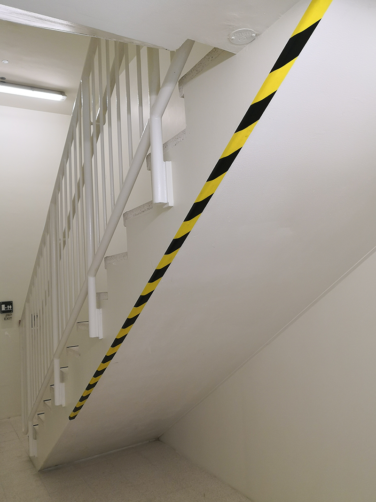

One emergency door in our Arts Center is quite problematic.
The issue with it is annoyingly subtle, being one of those cases where nothing seems to be wrong. The door is at end of a corridor on ground floor and it opens to the bottom of the staircases. There another door opens to the outdoor. In case of an emergency one can imagine herds of students rushing through it to safety. If only. As you can see in the photo above, the door is hinged on the left; in case of a real emergency people running through it are automatically pushed to the right. That happens because in a real emergency situation, with people frantically running for their lives, whoever opens that floor will be likely be pushing as hard as possible, most likely with people immediately behind him or her doing the very same thing. The result of these actions is that people will be pushed to the right as the door opens. The first ones to do so will not find a wall to oppose resistance and bounce them back towards the exit but they will smash their heads against the back of the staircase with little chance to make it back to the exit. This is something that we actually tested in class (with helmets on!) and it is quite scary or at least surely problematic that not enough attention is paid when planning emergency routes.